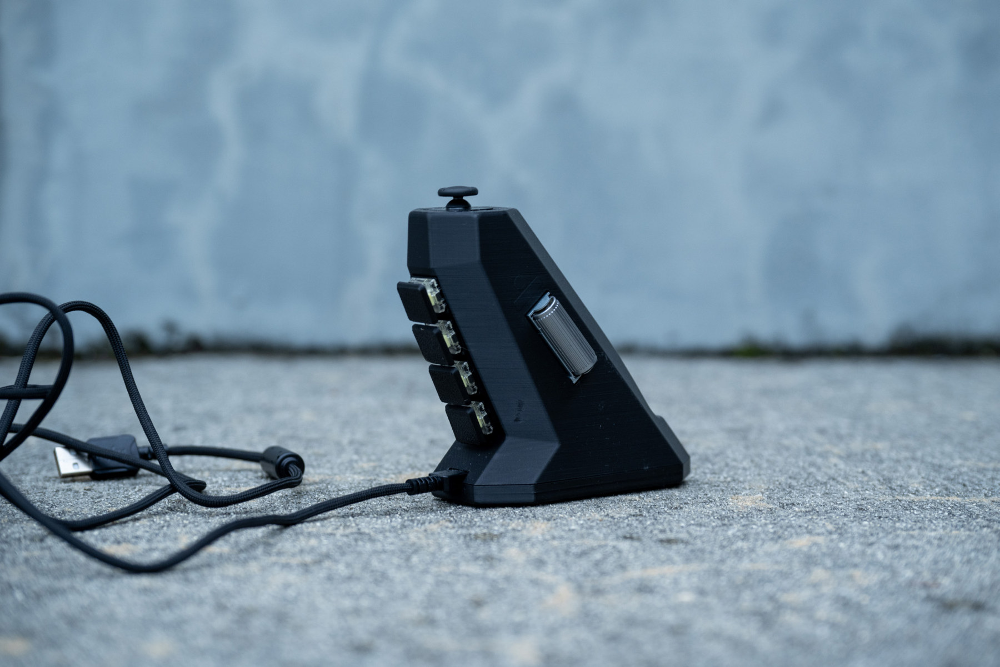
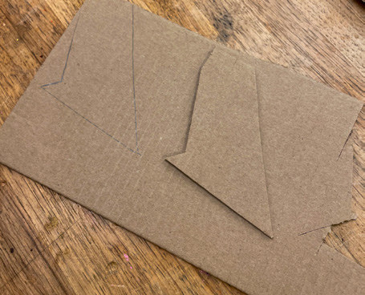
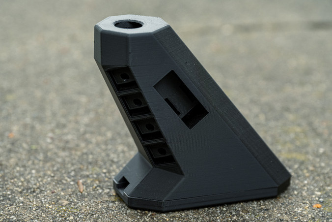
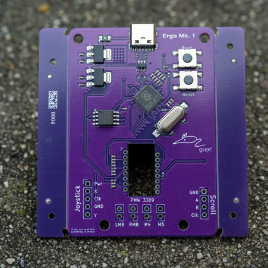
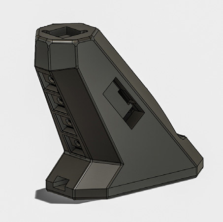

Ergo Mk1.
A different approach to the everyday mouse. Designed for comfort, repairability, and control with one hand.

- Timeframe
- 2 months
- My role
- Product design, PCB design, fabrication & programming
- Materials & technology
- RP2040 · Custom PCB · 3D-printed shell
Full control.
One hand.
Ergo Mk1 began with two goals: ergonomics and accessibility. I wanted to make full computer control possible with one hand, in a shape that feels natural to hold.
The grip takes inspiration from an Olympic airgun and a handshake posture. An optical mouse sensor, joystick, scroll wheel, and four main buttons bring different inputs together in one device.
Build, test,
reshape.
I started with a custom PCB and built the shell around it, moving from sketches to cardboard mockups and then 3D-printed prototypes.
Testing with different people led me to move the action buttons to the front for a more neutral grip. A recess at the back improved the hold and helped accommodate different hand sizes.
Designed to
come together.
Early versions enclosed the joystick and scroll wheel too tightly to assemble. Moving these components outward meant they could be soldered before insertion, while giving the mouse its exposed, mechanical character.
This was my first PCB design. I used common components to keep the build economical and repairable, and hand-soldered the board with solid-core wire to prevent rattle.
The RP2040 required adapting sensor code written for Arduino platforms. The replacement Nintendo Switch joystick also lacked a datasheet, making its pinout a challenge. With help from friends at Slugworks, I got the inputs working together.




Ergo Mk1
The result is a working exploration of one-handed computer input: a comfortable grip, accessible controls, and an assembly designed around repairable components.